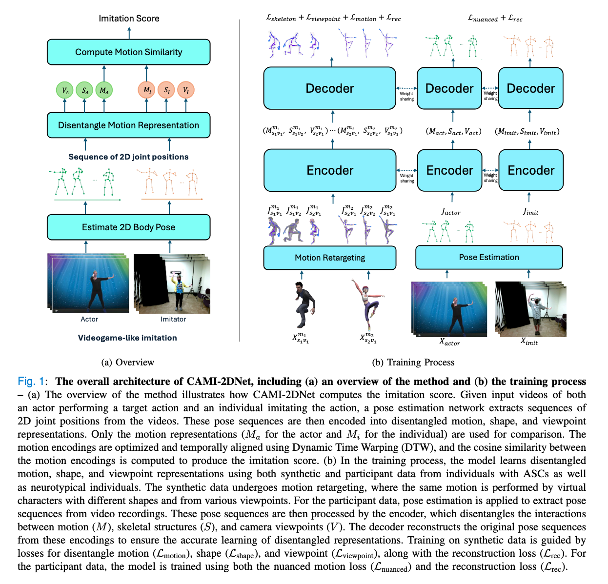

Method Overview

Motor imitation impairments are commonly reported in individuals with autism spectrum conditions (ASCs), suggesting that motor imitation could be used as a phenotype for addressing autism heterogeneity. Traditional methods for assessing motor imitation are subjective and labor-intensive, and require extensive human training. Modern Computerized Assessment of Motor Imitation (CAMI) methods, such as CAMI-3D for motion capture data and CAMI-2D for video data, are less subjective. However, they rely on labor-intensive data normalization and cleaning techniques, and human annotations for algorithm training.
To address these challenges, we propose CAMI-2DNet, a scalable and interpretable deep learning-based approach to motor imitation assessment in video data, which eliminates the need for data normalization, cleaning and annotation. CAMI-2DNet uses an encoder-decoder architecture to map a video to a motion encoding that is disentangled from nuisance factors such as body shape and camera views. To learn a disentangled representation, we employ synthetic data generated by motion retargeting of virtual characters through the reshuffling of motion, body shape, and camera views, as well as real participant data. To automatically assess how well an individual imitates an actor, we compute a similarity score between their motion encodings, and use it to discriminate individuals with ASCs from neurotypical (NT) individuals.
Our comparative analysis demonstrates that CAMI-2DNet has a strong correlation with human scores while outperforming CAMI-2D in discriminating ASC vs NT children. Moreover, CAMI-2DNet performs comparably to CAMI-3D while offering greater practicality by operating directly on video data and without the need for ad-hoc data normalization and human annotations.
@misc{kinfu2025cami2dnet,
title={Computerized Assessment of Motor Imitation for Distinguishing Autism in Video (CAMI-2DNet)},
author={Kaleab A. Kinfu and Carolina Pacheco and Alice D. Sperry and Deana Crocetti and Bahar Tunçgenç and Stewart H. Mostofsky and René Vidal},
year={2025},
eprint={2501.08609},
archivePrefix={arXiv},
primaryClass={cs.CV},
url={https://arxiv.org/abs/2501.08609},
}